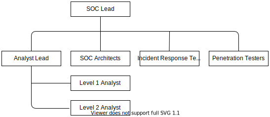

Кибербезопасность. Безопасность операций
Операции безопасности часто содержатся в SOC ("Security Operations Center" - "Центр операций безопасности"). Термины взаимозаменяемы.
Обычно ответственность SOC заключается в обнаружении угроз в окружающей среде и предотвращении их перерастания в дорогостоящие проблемы.
SIEM ("Security Information Event Management" - "Управление информационными событиями безопасности")
Большинство систем создают журналы, часто содержащие важную информацию о безопасности.
Событие - это просто наблюдения, которые мы можем определить из журналов и информации из сети, например:
- Пользователи входят в систему
- В сети наблюдаются атаки
- Транзакции в приложениях
Инцидент - это нечто негативное, которое, по нашему мнению, может повлиять на нашу организацию. Это может быть явная угроза или возможность возникновения такой угрозы. SOC должен сделать все возможное, чтобы определить, какие события могут привести к фактическим инцидентам, на которые следует реагировать.
SIEM обрабатывает предупреждения на основе журналов от различных датчиков и мониторов в сети, каждый из которых может создавать предупреждения, на которые SOC должен реагировать. SIEM также может попытаться сопоставить несколько событий для определения предупреждений.
SIEM обычно позволяет анализировать события из следующих областей:
- Сеть
- Хост
- Приложения
События из сети являются наиболее типичными, но наименее ценными, поскольку они не охватывают весь контекст того, что произошло. Сеть обычно показывает, кто, где, по каким протоколам и когда общается, но не подробные детали о том, что произошло, с кем и почему.
События организатора дают больше информации о том, что на самом деле произошло и с кем. Такие проблемы, как шифрование, больше не размываются, и становится понятнее, что происходит. Многие SIEM содержат подробную информацию о том, что происходит на самих хостах, а не только в сети.
События из приложения - это то место, где SOC обычно лучше всего понимает, что происходит. Эти события предоставляют информацию о тройном A, AAA (Authentication, Authorization и Account - Аутентификация, авторизация и аккаунт), включая подробную информацию о том, как работает приложение и что делают пользователи.
Для SIEM, чтобы понять события от приложений, обычно требуется работа группы SOC, чтобы заставить SIEM понимать эти события, поскольку поддержка часто не включается "из коробки". Многие приложения являются собственностью организации, и SIEM ещё не понимает, какие данные передают приложения.
SOC Кадровое обеспечение
Состав SOC сильно зависит от требований и структуры организации. В этом разделе мы кратко рассмотрим типичные роли, задействованные в работе SOC. Обзор потенциальных ролей:

Как и в большинстве организованных команд, назначается роль руководителя отдела. Начальник SOC определяет стратегию и тактику противодействия угрозам организации.
Архитектор SOC отвечает за обеспечение того, чтобы системы, платформы и общая архитектура могли предоставлять то, что требуется членам команды для выполнения своих обязанностей. Архитектор SOC поможет построить правила корреляции между несколькими точками данных и обеспечит соответствие входящих данных требованиям платформы.
Ведущий аналитик отвечает за разработку и поддержание процессов или сценариев, чтобы аналитики могли находить информацию, необходимую для вывода предупреждений и потенциальных инцидентов.
Аналитики уровня 1 первыми реагируют на предупреждения. Их обязанность, в пределах их возможностей, заключать оповещения и направлять любые проблемы аналитику более высокого уровня.
Аналитики 2-го уровня отличаются большим опытом и техническими знаниями. Они также должны гарантировать, что любые проблемы, связанные с устранением предупреждений, будут отправлены руководителю аналитика, чтобы помочь непрерывному совершенствованию SOC. Уровень 2 вместе с ведущим аналитиком передает инциденты в группу реагирования на инциденты.
IRT (Incident Response Team - Группа реагирования на инциденты) является естественным продолжением группы SOC. Команда IRT направлена на исправление и решение проблем, влияющих на организацию.
В идеале тестеры на проникновение также поддерживают защиту. Тестеры на проникновение обладают глубокими знаниями о том, как действуют злоумышленники, и могут помочь в анализе первопричин и понимании того, как происходят взломы. Объединение атакующих и защитных команд часто называют "Purple Teaming" ("Фиолетовая команда") и считается передовой практикой.
Цепочки эскалации
Некоторые оповещения требуют немедленных действий. Для SOC важно определить процесс, с которым следует связываться при возникновении различных инцидентов. Инциденты могут происходить в самых разных бизнес-подразделениях, SOC должен знать, с кем связываться, когда и по каким средствам связи.
Пример цепочки эскалации инцидентов, затрагивающих одну часть организации:
- Создайте инцидент в назначенной системе отслеживания инцидентов, назначив его нужному отделу или лицам;
- Если никаких прямых действий со стороны отдела / человека(-ов) не происходит: отправьте SMS и электронное письмо основному контактному лицу;
- Если прямых действий по-прежнему нет: позвоните основному контактному лицу;
- Если по-прежнему нет прямых действий: позвоните второму контактному лицу.
Классификация происшествий
Инциденты следует классифицировать в соответствии с их:
- Категория
- Критичность
- Чувствительность
В зависимости от классификации инцидентов и их атрибуции SOC может принимать различные меры для решения возникшей проблемы.
Категория инцидента определяет, как реагировать. Существует много видов инцидентов, и SOC важно понимать, что каждый тип инцидента означает для организации. Примеры инцидентов перечислены ниже:
- Взлом изнутри
- Вредоносное ПО на клиентской рабочей станции
- Червь распространяется по сети
- Распределенная атака отказа в обслуживании
- Утечка учетных данных
Критичность инцидента определяется на основе количества затронутых систем, потенциального воздействия отказа от остановки инцидента, задействованных систем и многих других факторов. Для SOC важно иметь возможность точно определить критичность, чтобы инцидент мог быть соответствующим образом закрыт. Критичность - это то, что определяет, насколько быстро нужно реагировать на инцидент. Следует ли немедленно реагировать на инцидент или команда может подождать до завтра?
Чувствительность определяет, кого следует уведомить об инциденте. Некоторые инциденты требуют особой осторожности.
SOAR ("Security Orchestration, Automation and Response" - "Обеспечение безопасности, автоматизация и реагирование")
Чтобы противостоять продвижению злоумышленников, автоматизация является ключевым моментом для быстрого реагирования современного SOC. Чтобы облегчить быстрое реагирование на инциденты, у SOC должны быть инструменты для автоматической координации решений для реагирования на угрозы в среде.
Стратегия SOAR означает обеспечение того, чтобы SOC мог использовать важные данные, чтобы помочь смягчить и остановить угрозы, которые развиваются в более реальном времени, как можно раньше. В традиционных средах злоумышленникам требуется очень короткое время с момента взлома до того, как они распространятся на соседние системы. В отличие от этого организациям обычно требуется очень много времени, чтобы обнаружить угрозы, проникшие в их среду. SOAR пытается помочь решить эту проблему.
SOAR включает такие концепции, как IAC "Infrastructure as Code" ("Инфраструктура как код") чтобы помочь восстановить и устранить угрозы. SDN ("Software Defined Networking" - "Программно-определяемая сеть") для более быстрого и легкого управления доступом и многое другое.
Что контролировать (мониторить)?
События можно собирать на разных устройствах, но как определить, что собирать и отслеживать? Мы хотим, чтобы логи (журналы) были самого высокого качества. Журналы с высокой точностью, актуальные и идентифицирующие, чтобы быстро остановить злоумышленников в наших сетях. Мы также хотим, чтобы злоумышленникам было сложно обойти настраиваемые нами предупреждения.
Если мы рассмотрим различные способы поимки злоумышленников, станет очевидным, на чем мы должны сосредоточиться. Вот список возможных индикаторов, которые мы можем использовать для обнаружения злоумышленников, и того, что сложно злоумышленникам изменить.
| Индикатор | Трудно изменить |
|---|---|
| Контрольные суммы и хэши файлов | Очень просто |
| IP-адреса | Легко |
| Доменные имена | Просто |
| Сетевые и хостовые артефакты | Раздражающий |
| Инструменты | Сложно |
| Тактика, методы и процедуры | Тяжело |
Контрольные суммы и хэши файлов могут использоваться для идентификации известных вредоносных программ или инструментов, используемых злоумышленниками. Изменение этих сигнатур считается тривиальным делом для злоумышленников, поскольку их код может быть закодирован и изменен множеством различных способов, что приведёт к изменению контрольных сумм и хэшей.
IP-адреса также легко изменить. Злоумышленники могут использовать IP-адреса с других взломанных хостов или просто использовать IP-адреса в джунглях различных облачных и VPS (Virtual Private Server - Виртуальных частных серверов) провайдеров.
Злоумышленники могут легко перенастроить доменные имена. Злоумышленник может настроить скомпрометированную систему на использование DGA (Domain Generation Algorithm - Алгоритм генерации домена) для постоянного использования нового DNS-имени с течением времени. Одна неделя скомпрометированная система использует одно имя, но на следующей неделе имя изменилось автоматически.
Сетевые артефакты и артефакты хоста больше раздражают, поскольку это требует дополнительных изменений для злоумышленников. Их утилиты будут иметь подписи, такие как пользовательский агент или отсутствие таковых, которые могут быть обнаружены SOC.
Злоумышленникам становится все труднее менять инструменты. Не хеши инструментов, а то, как инструменты ведут себя и работают при атаке. Инструменты будут оставлять следы в журналах, загружать библиотеки и другие вещи, которые мы можем отслеживать для обнаружения этих аномалий.
Если защитники способны определять тактики, приёмы и процедуры, которые используют злоумышленники, злоумышленникам становится ещё труднее добраться до своих целей. Например, если мы знаем, что злоумышленник любит использовать Spear-Phishing, а затем Pivoting однорангового соединения с другими системами-жертвами, защитники могут использовать это в своих интересах. Защитники могут сосредоточить обучение на персонале, подверженном риску целевого фишинга, и начать создавать барьеры для отказа от одноранговых сетей.